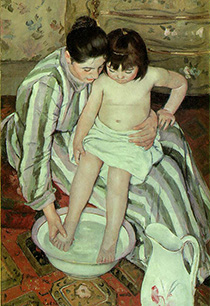
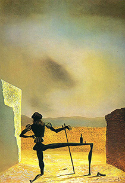

welcome ———
MOST VIEWED

Mademoiselle Caroline Riviere
Jean-Auguste-Dominique Ingres
The portrait of Mademoiselle Caroline Rivière was painted in 1806 by the French...

Bath
Mary Cassatt
The Child's Bath (or The Bath) is an 1893 oil painting by American artist Mary Cassatt...
Bath
Mary Cassatt
The Child's Bath (or The Bath) is an 1893 oil painting by American artist Mary Cassatt...

The Ghost of Vermeer van Delft which Can Be Used as a Table
Salvidor Dali
The title refers to the Dutch painter Johannes Vermeer and the image of Vermeer viewed...
The Ghost of Vermeer van Delft which Can Be Used as a Table
Salvidor Dali
The title refers to the Dutch painter Johannes Vermeer and the image of Vermeer viewed...